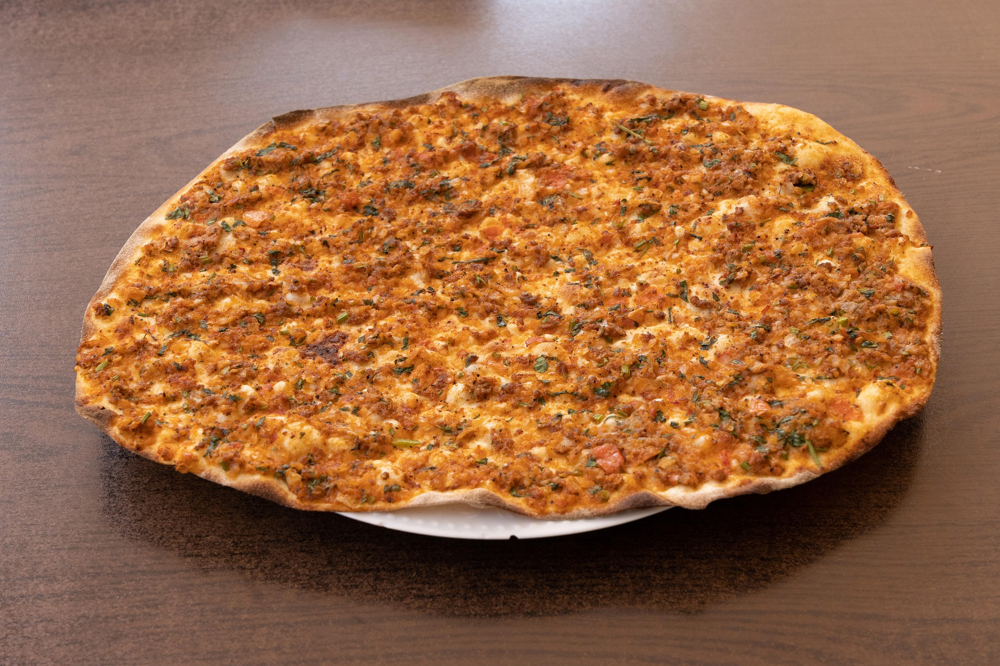

Lahmacun
90 Min
medium
20.02.2025
- 500 g Mehl
- 21 g frische Hefe
- 2 EL Olivenöl
- 1 TL Zucker
- 1 TL Salz
- 1 Tasse Wasser (lauwarm)
- 2 Stk Zwiebel(n)
- 2 Stk Tomate(n)
- 0.5 Bund Petersilie
- 500 g Faschiertes (nach Wahl)
- 2 EL Tomatenmark
- 1 Brise(n) Pfeffer
- 1 Brise(n) Chilliflocken/Pulver
Zubereitung
90 min. Gesamtzeit
20 min. Zubereitungszeit
70 min. Koch & Ruhezeit
Für ein Lahmacun als erstes einen Hefeteig machen - dazu Mehl und Hefe mischen und mit Zucker, Salz, Wasser und Öl zu einem glatten Teig verarbeiten. Abgedeckt mit einem feuchten Geschirrtuch lässt man den Teig dann eine knappe halbe Stunde an der Wärme gehen. Danach wird der Teig einmal durchgeknetet und nochmals abgedeckt für weitere 30 Minuten zum Ruhen beiseite gestellt.
In den Ruhezeiten kann schon der Belag vorbereitet werden: Dazu die Zwiebeln schälen und mit den gewaschenen Tomaten sehr fein würfeln. Die geschälten Knoblauchzehen werden gepresst und die gewaschene Petersilie fein gehackt. Dann mit dem Faschierten, Tomatenmark, Olivenöl, Pfeffer, Salz und den Kräutern gut vermischen.
Außerdem können zwei Bleche mit Backpapier ausgelegt und der Ofen auf 200°C vorgeheizt werden. Dann den fertigen Teig in 4 kleine Kugeln teilen (ca. 80 bis 100 g) und auf einer bemehlten Fläche zu ca. 3-5 Millimeter dünnen Fladen ausrollen. Je nach Blechgröße einen oder zwei Fladen darauf geben und jeweils eineinhalb Esslöffel Fleischmasse darauf verteilen.
Nun alle Fladen im Ofen für ca. 10 bis 12 Minuten backen bis der Teig am Rand langsam knusprig wird und eine leichte Bräunung erhält. Die fertigen Lahmacun können warm oder ausgekühlt gegessen werden.
Für extra Schärfe: mit Chilli garnieren!
Rezept erstellt von
 Ibrahim
Ibrahim